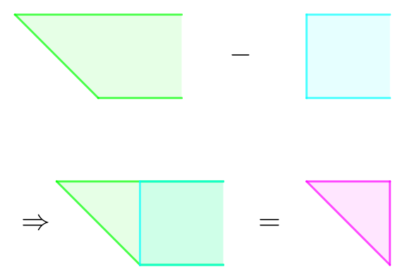

给定一个 $n \times n$ 的正方形区域，每次会放置若干个直角边平行于正方形边的等腰直角三角形，并询问一个点被覆盖了多少次。
第一行包含两个正整数 $n, q$ ($n \leq 5000; q \leq 10^5$)，表示正方形区域的大小和操作的个数。
接下来 $q$ 行，每行描述一个操作，格式如下：
1 dir x y len ($1 \leq dir \leq 4; len \geq 1$) 表示加入一个等腰直角三角形，形状由 $dir$ 决定，位置由 $x, y$ 决定：
2 x y ($1 \leq x, y \leq n$)，表示询问点 $\left( x, y \right)$ 在当前多少个三角形的内部 (含边界)。保证所加入的三角形内部的所有点都在正方形区域中。
对于每个 2 操作，输出一行一个整数，表示点 $\left( x, y \right)$ 在多少个三角形内部。
如果加入的是正方形而不是三角形，但它就是一个容易的问题 —— 二维差分后变为单点加、矩形求和。使用二维线段树 (树套树) 解决。
那么对于等腰直角三角形，又该怎么做呢？
其实思路也是类似的。考虑一个等腰三角形，我们可以将其看成两个 (无限延伸的) 平行四边形区域的差：
对于右边那个 (蓝色) 的矩形，是非常容易维护的，那对于左边那个平行四边形，维护其实也不难：只需要做一个切变变换，将其变为矩形区域，使用另一个树套树维护即可。最终，每个点的值就只需要在两个树套树中分别求值然后做差即可。
由于等腰直角三角形的斜边方向有两种，因此，需要做两种切变变换，从而需要两棵额外的树套树。
总时间复杂度 $O \left( n + q \log^2 n \right)$。
#include <bits/stdc++.h>
#define lowbit(x) (x & -x)
const int N = 5054;
struct BST {
struct node {int v, lc, rc;} x[20030731 / 2];
int Row, Col, cnt = 0, root[N];
int add(int id, int L, int R, int h, int v) {
if (!id) id = ++cnt; x[id].v += v;
if (L == R) return id;
int M = (L + R - 1) >> 1;
h <= M ? x[id].lc = add(x[id].lc, L, M, h, v) : (x[id].rc = add(x[id].rc, M + 1, R, h, v));
return id;
}
int prefix(int id, int L, int R, int h) {
if (!id || R <= h) return x[id].v;
int M = (L + R - 1) >> 1;
return h <= M ? prefix(x[id].lc, L, M, h) : x[id].lc[x].v + prefix(x[id].rc, M + 1, R, h);
}
void add(int r, int c, int v) {
if (c < 1 || c > Col) return;
for (; r <= Row; r += lowbit(r)) root[r] = add(root[r], 1, Col, c, v);
}
int sum(int r, int c) {
int s = 0;
for (; r > 0; r -= lowbit(r)) s += prefix(root[r], 1, Col, c);
return s;
}
} S, MD, AD;
int n, q;
int main() {
int op, d, r, c, a;
scanf("%d%d", &n, &q);
S.Col = S.Row = MD.Row = AD.Row = n;
MD.Col = AD.Col = 2 * n - 1;
for (; q; --q)
if (scanf("%d", &op), op == 1)
switch (scanf("%d%d%d%d", &d, &r, &c, &a), d) {
case 1:
S.add(r, c, 1), S.add(r + a + 1, c, -1);
AD.add(r, r + c + a, -1), AD.add(r + a + 1, r + c + a, 1);
break;
case 2:
S.add(r, c + 1, -1), S.add(r + a + 1, c + 1, 1);
MD.add(r, n - r + c - a, 1), MD.add(r + a + 1, n - r + c - a, -1);
break;
case 3:
S.add(r - a, c, 1), S.add(r + 1, c, -1);
MD.add(r - a, n - r + c + a + 1, -1), MD.add(r + 1, n - r + c + a + 1, 1);
break;
case 4:
S.add(r - a, c + 1, -1), S.add(r + 1, c + 1, 1);
AD.add(r - a, r + c - a - 1, 1), AD.add(r + 1, r + c - a - 1, -1);
break;
}
else
scanf("%d%d", &r, &c),
printf("%d\n", S.sum(r, c) + MD.sum(r, n - r + c) + AD.sum(r, r + c - 1));
return 0;
}
坑1：注意数组的大小！由于二维 (动态开点) 线段树的空间是 $O \left( q \log^2 n \right)$，因此需要开的足够大。同时，由于有三个树套树，因此也不能开得太大，以免 MLE。
坑2：做切变变换后的树套树的大小是 $n \times 2 n$ 的，也不要开小了。